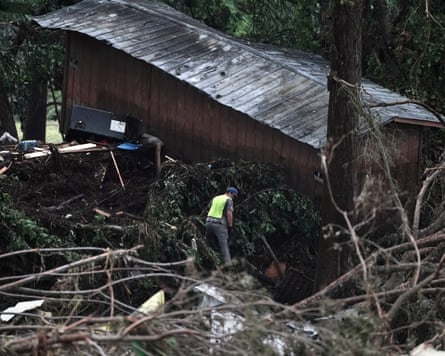

As Texas marshals a formidable response to the flash floods that have already killed dozens, questions are now being posed about warnings that were given on Thursday and early Friday about the severity of the approaching storm and the co-ordination between local officials and the National Weather Service.
New flood alerts were issued for Texas “hill country” on Sunday, prompting rescue services to suspend the search for missing people, including at least 11 from Camp Mystic, the summer camp on the banks of the Guadalupe River hard hit by Friday’s flash flood .
At an early evening press briefing, Kerr county authorities said they were suspending the search and evacuating first responders from the river valley. They confirmed that 68 had died there, including 28 children. Not all have been identified, with officials still examining the bodies of 18 adults and 10 children.
Extraordinary tales of resilience have also emerged alongside videos of the destruction and loss that are circulating on social media. On Sunday, a video was posted on X of girls from Camp Mystic being evacuated from the camp and singing the hymns Pass It On and Amazing Grace as they crossed a bridge over the still torrential Guadalupe River.
The new round of rainfall in the area prompted an alert of a “dangerous and life-threatening situation”, it said, adding: “Do not attempt to travel unless unless you are fleeing an area subject to flooding or under an evacuation order.”
The co-ordination between Kerr county officials and the National Weather Service has become a flashpoint of its own.
Dalton Rice, the city manager of Kerrville, one of the hardest-hit areas, told reporters on Sunday afternoon: “We don’t want to speculate at this time. There will be a formal review that will focus on future preparedness.”
When asked why Kerr county had not moved to evacuate the area before the storm hit, Rice said that authorities were preparing for the storm, “but unfortunately the rain hit at an inopportune time and right at the most importune areas where the north and south forks of the river converge.”
First responders search a building washed ashore from flood waters, in Hunt, Texas, on Sunday.Photograph: Dustin Safranek/EPA
“We want to focus on continuing rescue operations,” he added.
Kerr county does not have outdoor weather sirens that are common in tornado zones and were once common across the US as relic of cold war nuclear attack alert systems.
Since the flood, local resident Nicole Wilson started an online petition “urgently” calling for Kerrville and Kerr county to implement an outdoor system. “A well-placed siren system will provide critical extra minutes for families, schools, camps, businesses and visitors to seek shelter and evacuate when needed,” she told KXAN . “This is not just a wish – it is a necessary investment in public safety.”
But questions are also being asked about whether Kerr county commissioners’ court and flood plains administrator had approved development along the river bank that may have skirted rules issued by the Federal Emergency Management Agency (Fema) that control where homes may be built in areas vulnerable to flooding.
At a Red Cross center in Kerrville on Sunday, flood survivor Kathy Perkins said shehad been alerted to the storm by thunder and lightning. Emergency workers had come to her town, Ingram, and turned on their sirens.
“They were supposed to wake everyone up but I just left. It was just two guys in a white truck and they said to me: ‘You gotta get out, you don’t have much time.’ It must have already hit in Hunt.”
Perkins was luckier than some. Her trailer home was damaged by water, but some of her neighbors’ homes got swept away or moved around by the water. “Many people are angry right now, but you wait ‘til the parents get here,” she said, referring to the parents of the children lost at Camp Mystic. “Those parents are from everywhere.”
The authorities, she added, “won’t just be able to go hush-hush. Those kids should have been safe and they weren’t.” Perkins said everyone in the area noticed that Judge Rob Kelly, Kerr county’s most senior elected official, seemed to shirk responsibility when he said on Friday: “We didn’t know this flood was coming. Rest assured, no one knew this kind of flood was coming. We have floods all the time. This is the most dangerous river valley in the United States.”
“He said: ‘We didn’t know nothing.’ Everybody caught that,” Perkins said.

Lesa Baird, a Hunt resident who was bruised during the floods.Photograph: Edward Helmore/The Guardian
Lesa Baird, a resident of Hunt who was also staying at the Red Cross shelter, said she heard “no warning at all, none whatsoever” when the floods came.
“I heard something going on. I put my feet on the floor and felt the water. I picked up a bunch a kittens in a box and woke my friend up. He had to break a window to get out of the house.”
But as they got out of the home, Baird, 65, followed a cable strung from the house and reached a tree. “We got up in the tree and he pulled me up as best he could. Thank God he did because I could dangle my foot down and feel the water. We stayed up there for what seemed like hours.”
When the waters began to recede, they climbed down and walked to the local Baptist church. Now recovering from her ordeal, Baird said she’d never seen the Guadalupe River flood as badly as it had. Like many others, Baird faces the kind of limbo that affects natural disaster survivors: she wants to go home.
“There’s no home to go to. It’s done,” she said, declining to be photographed except for the bruises on her arms incurred during her ordeal. “I may be able to salvage a bunch of things here and there, but this is my stuff,” she said, pointing to some bags of donated clothes.